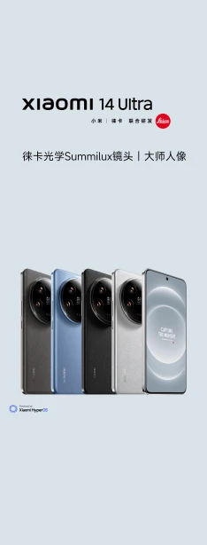

Title
1复习
Html介绍
超文本标记语言
写网页内容，即网页中有啥
文件后缀Htm、html
Html不区分大小写
Html由浏览器解析执行，由上往下，由左往右
标签标记 间括号包含的关键词
双标记 封闭类型标记 如p，h1~6
单标记 非封闭类型标记 空标记 如br ，hr ，img
元素指从开始1标签到结束标签之间的所有内容
内容
开始标记 内容 结束标记
元素的开始 元素的内容 元素的结束
Html的属性
Html的属性是用来修饰元素的
双标记写在开始标签里面，用空格隔开
单标记写在/前面，用空格隔开
一个标签可以有多个属性，用空格隔开
多个属性不区分前后顺序
属性=“属性值”
Html的注释
ctrl+/单 or ctrl+shift+/多 《！-- 内容--》
注意
1注释之间不能相互嵌套
2注释不会被浏览器解析
标签之间可以互相嵌套
注意嵌套的顺序
标题标签
从h1-h6 一号标题最大，逐级递减
align水平对齐方式=“left左（默认）center居中right居右”
段落标签
《p》内容《/p》
align水平对齐方式=“left左（默认）center居中right居右”
换行
《br/》
水平线
《hr/》 、属性：
colo颜色
width设置水平线的水平方向
size设置水平线的垂直方向
align设置水平线的对齐方式取center/left/right（默认居中）
图片
《img》
属性
src（必须属性）路径
alt当图片显示失败给予提示
title鼠标悬停给予提示
width设置图片的宽度（水平线）
height设置图片的高度（垂直线）
html默认单位为px（像素），当单位为像素时可以不写
align=left。right。center设置图片对齐方式但居中不行
2路径
路径 ，基于html位置找图片（一般把图片文件夹命名为images）
一 绝对路径：图片路径固定
1网址
2盘符（磁盘符路径。webstorm内置服务器，所以不会显示盘符路径，可以打开本地文件查看）
二 相对路径：图片路径不固定
1平级：图片在同一级文件夹下可以在src属性值中直接输入图片名称（带后缀）
2下一级：（文件夹）/（图片文件名称）
3上一级：../（图片文件） ，每个../表示向上一级。要保证是同一个项目文件
3 IDE和浏览器
f12 控制台，左侧elements是html； styles是CSS；JS是console
4 文档类和声明
《！DOC(文档)TYPE（类型） html》不是标签。
文档类型声明：告诉浏览器按当前标准解析代码
“《!DOCTYPE html》”html5的文档类型声明（即按h5标准，可以小写）
H5的标准：HTML标签不区分大小写，双标记的结束标签可以省略（即不写结束标签，但不推荐），单标记的“/”可以省略
hrml4三个版本 ：严格，过度，框架集
Xhtml ：严格的html，区分大小写
05基本结构
不加文档类型声明浏览器为混杂模式
加文档类型声明：浏览器为标准模式
DTD 文档=doctype
《html lang=“”》文档开始 lang对页面主要语言进行声明（可以设置zh-CN表示中文站，在搜索引擎更容易出现）
《/html》文档结束
《head》《/head》用户唯一能看见“title”标签之间的。就是网页标题，一个页面只能有一个标题
mate标签写在head标签里边，《meta charset=“”》中meta用来描述一个html网页文档的属性 。字符集 中文开发网站常用utf-8. utf-8支持汉字
meta值还有meta name=“keywords（关键词，用来告诉搜索引擎你的网页关键词是什么）”content（网站内容描述）或
description（描述。用来告诉搜索引擎你网站的主要内容） content=“”内容描述或
author（作者） content=“标注网页的作者”留下邮箱或者名字
《body》《/body》网页所有显示的内容写在body里
06块级元素和行内元素的区别（掌握）
>
块级元素和行内元素的区别
（1）块级元素独占一行（如p标签），行内元素在同一行显示（如图片img）
（2）块级元素默认宽度为100%，行内元素默认宽度由内容撑开（图片多大，撑开多大）
%相当于父元素（如在html标签中，html是body的父元素）来说。平级为兄弟元素
（3）块级元素：h1~6 。p。 hr
（4）行内元素：img,a
（br因为没有可以加的内容所以不在块级和行内元素中）
07语义化标签（理解）
看到这个标签知道这个标签是什么，如h1，知道这是一级标题
正确的标签干正确的事情
优点1：有利于搜索引擎优化SEO
2有利于团队开发和维护
3有利于其他设备去读取
08超链接（掌握）
超链接作用：跳转《a href=“图片、网页” 》《/a》
双标记，行内元素
属性：
href：必须属性，路径。可以作为锚点（同一页面跳转）和网页跳转，图片跳转。
target 打开目标的窗口
_self 原窗口 （默认）
_blank 新窗口
_self
_top
tp
TP
sese

这里之所以用a标签套img标签是因为a标签跳转的是里边的内容，而显示图片写在a标签里才能实现
想要实现图片居中，现在单靠img标签是不够的，以用p标签的align来嵌套图片，使其居中对齐

小米& **版 XXX
**倍潜望式变焦/轻薄5G手机
****元起
*-
09锚点（了解）
作为08的补充属性：
1，点击a跳转到a 即加name属性
《a href=“”》《/a》
《a href=“” name=“”（不能写汉字和以数字开头）》《/a》（可以套娃，把第三个name值放在第二个href上，可以做首尾页直通车）
想进行锚点跳转时，把下文的name属性值加上#写进href的属性值
name只能加在a标签上。name可以重复
name锚点（同一个页面去跳转）
2，点击a跳转到块状元素 即加id属性
开始句《a href=“#名字”》内容《/a》
结束句《开始标签 id=“名字”》内容《/结束标签》（只能以块状元素为例）
如果点击开始句的内容，会跳转到结束句的地方
----------------------------------------------------------------
空链接
《a href=“#”》《/a》效果：返回页面顶部
10文本格式化标签（了解）--------------------------------
都是双标签，行内元素。没有任何元素。
b加粗
i倾斜
u下划线
浏览器默认一个字的宽度为16像素（水平线方向）行高默认为21（垂直方向）（块级元素和行级元素的高度都是由内容撑开）
del删除线
s删除线
em强调（倾斜显示）
strong强调（加粗显示）
虽然em和strong与i和b显示效果一样，但是语义不一样。
sup上标
sub下标
2 3
big（已淘汰）大号字体，大于16
small小号字体，小于16
11无序列表（掌握）
文本格式化标签都是行级元素，列表都是块级元素
列表结构：
一，无序列表
《ul（un（前缀） order（顺序） ed（过去式） list（列表）》无序列表
《li》《/li（list列表 item项 ）》每行列表项
《/ul》
快捷语法：ul>li*n（包含关系）
普通同文本无序列表：ul>li{显示内容}*3
带链接的无序列表：ul（一个列表）>li*5（五个列表项，可以在li后加{}里面输入内容）>a（每个li列表项中有一个a链接）
注意，如果想在把链接当空链接，a部分写：a[href=#] ，如果有内容加上：{显示内容}
ul>li*5>a[href=# target="_blank"]{跳转}解释：这是一个无序列表，包含了5个列表项，每个列表项中有一个链接，会跳转到页面顶部，若href属性有值的话，因为target属性的_blank属性值会在新页面打开。
ul和li的属性（了解）
共同属性*（因为双标签的属性写在开始标签里，共同属性就是这个表结构的表开始标签可以写，表项目开始标签也可以写）
type：设置项目符号（默认黑色实心圆）
取值：
disc 默认值，黑色实心圆
circle 空心圆
square 黑色实心矩形
none 不显示
结合上文来看，type写在ul上是整个项目变，写在li上是单个项目变。
12无序列表练习
ul>li*10>a[href=#]
13无序列表嵌套（了解）
即：ul>li>ul>li这种格式（一定要有ul才表示这是无序列表）
注：这种结构的项目符号默认情况下是第一级：实心圆。第二级空心圆。第三级及以后黑色实心矩形。（可以加type属性更改）
14无序列表练习
15有序列表（了解）
基础结构：把ul中的u换成ol就行
常用结构↓
ol>li*3>a[href=# target="_blank"]{内容}
《ol》
《li》《/li》
《/lo》
嵌套结构和ul一样，可以在有序列表嵌套无序列表再嵌套有序列表
属性
type设置项目符号。默认为1 可以取值a A i I
start设置从第几个开始。可以取值为number（数字）
reversed倒序。取值为reversed（属性和属性值相等，可以简写属性）
16自定义列表（了解）
自定义列表（都是块级元素）
dl
dt/dt主题
dd/dd描述
一个自定义列表可以有多个主题
一个主题可以对应多个描述（注释）
没有任何属性(这两个dt，dd是同级)
/dl
如图案例：
请给我打款！阿里嘎多！
这里用dt主题是因为发现dd描述会首行缩进两字符，用居中时会发现不是按照网页来居中而是按缩进后的网页宽度居中
- 帮助中心
- 账户管理
- 财务指南
- 订单操作
17表格标签（掌握）
横行竖列
特点：同行等高，同列等宽
表格
作用
：
存储数据，向用户展示数据（用户不能编辑，样式要css变好看些）
特点：横--行，竖--列。同行等高，同列等宽
创建表格时的标签：
横竖交叉的格叫单元格。
表格里面的标签都是双标签和块级元素
table 表示表格开始，border用来设置表格边框尺寸的大小。
先写tr（table表 row行）行再写td（table表 data数据cell单元格）。所有显示内容写在td里面。而且不能省去table和tr。
有几行就写几个tr，有几列就写几个td
属性：
table /table 表格
tr /tr行 全称table row
td /td列 单元格 table data cell
th /th特殊的单元格（文本格式默认水平居中且加粗）相当于替换td单元格为th特殊单元格
caption/caption表格的标题（写在table里面，默认在整体表格的顶置中间，不受单个单元格的影响）
未完待续……